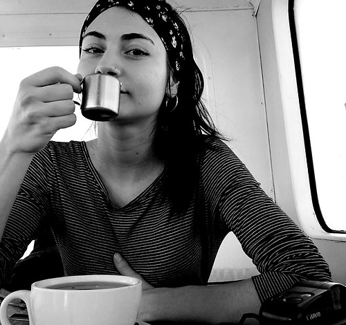
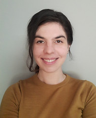

Lecturer · School of Psychology
Lecturer · School of Psychology
Our research
Object recognition seems effortless, but our visual world is constantly dynamic and cluttered. The lab studies two mechanisms that let us make sense of it.
Latest publication
The team


Join the lab
Enthusiastic students who want to gain research experience can contact us to see if there are current opportunities.